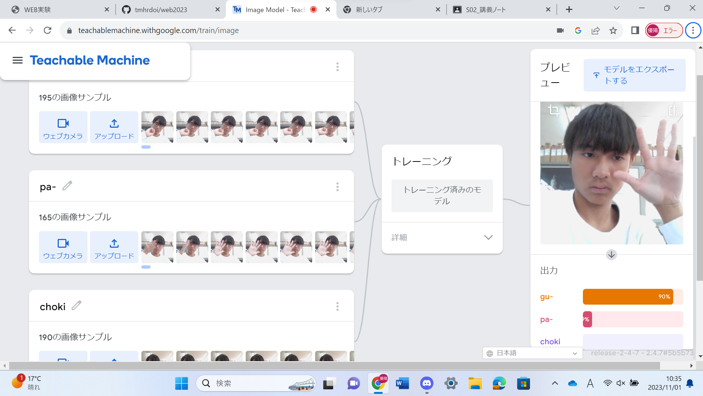
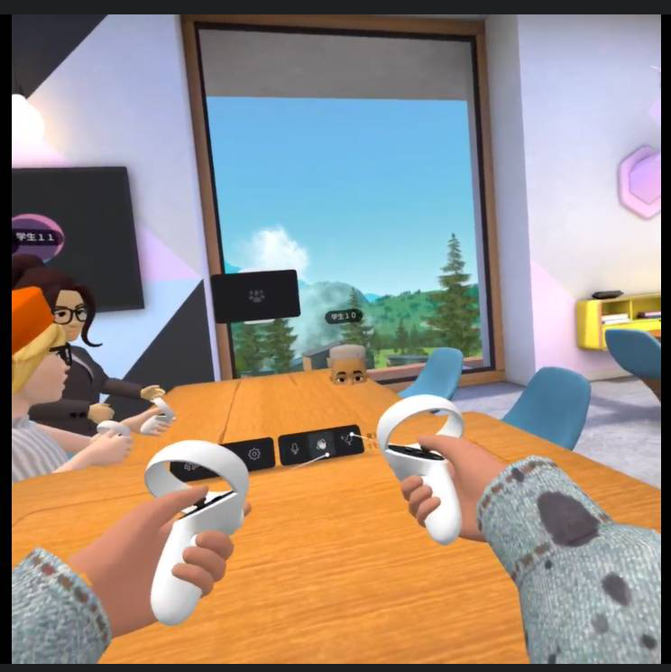

第2週目
2-1 １週目のレポートをHTMLで作る
１週目のレポート
1.内容
1週目の実験実習のスクラッチでのラインアートとゲームの作成体験や自己紹介のホームページ作成の体験の内容と感想をそれぞれ記入したレポートを作成した。
2.感想
今回の実験で、個人で一からホームページを作成する厳しさを感じることができた。今回は文字を入力するだが、自分で一から作るにはプログラミングも必要で今の自分では作れないと実感した。
画像の名前を変えるのを忘れていて画像をホームページに取り入れるのに少し手こずってしまった。
2-2 機械学習体験

1.内容
teachable machineを利用して画像判別の機能を体験した。
teachable machineの画像プロジェクトに自分のグー、チョキ、パーの各写真を150枚くらい保存して、その画像を参考に自分がどんな手をしているのかを当ててもらった。
2.感想
何回も画像判別を試しているうちに、グー、パーは比較的に正しく判別されやすいがチョキは正しく判別されなかった。写真の数を増やしてみたり、角度を変えたりしてみたりしてみたりしたら判別されやすくなると考察した。teachable machineには画像判別の他に音声とポーズの判別があり、それらもやってみようと思った。
2-3 VR（バーチャルリアリティー：Virtual Reality）会議室の体験

1.内容
VRゴーグルのMete Quest2を使って、クラス会議の参加する体験した。
VRゴーグルをつけて、worksroomのアプリに入り、クラスの人と話したり、黒板に絵を書いたりできる会議に参加した。
2.感想
会議の中では近くの人と話したり、手の形を感知して表示させたり、思っていた以上にリアリティがあって驚いた。机に埋まったり、隣の人と遊べたり、机に絵を書けたりして興味深く、VRについて感心を持った。